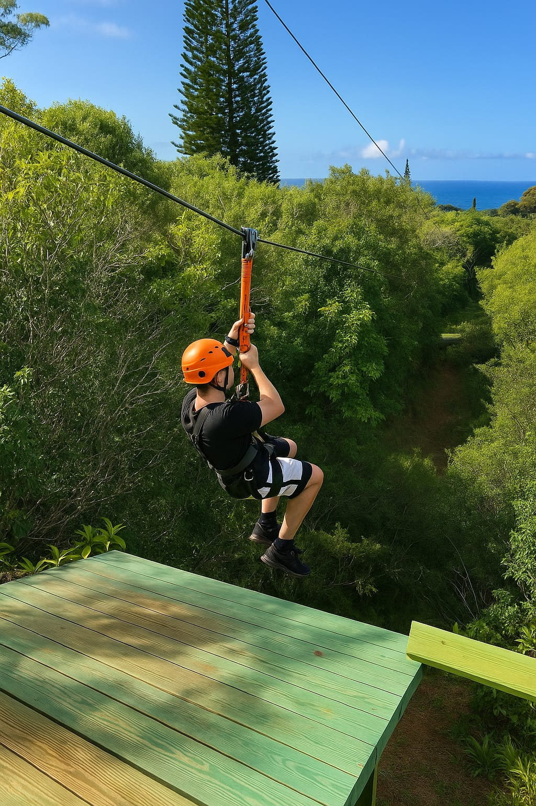
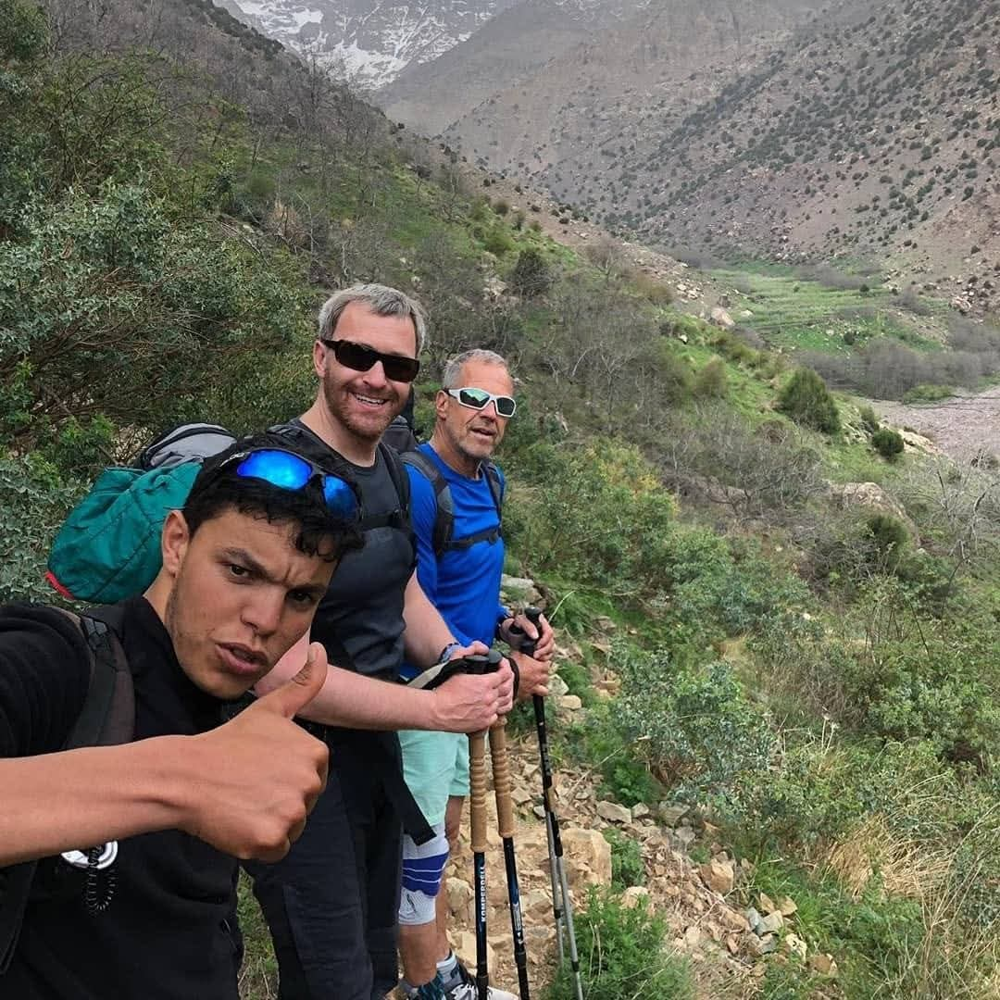

Enjoy an unforgettable day
trip from Marrakech combining adventure, culture, and stunning Atlas Mountain landscapes.
Your journey begins with a pick-up from your accommodation in Marrakech, followed by a scenic drive toward the Atlas Mountains. On the way, you will pass through several traditional Berber villages, offering a glimpse into local mountain life.
Your first stop will be in the Tahnaout area, where you will enjoy a light traditional breakfast in a local village. You will also visit a women’s argan oil cooperative, where a local woman will explain the process of making argan oil and its traditional uses. This is a great opportunity to learn about Berber culture and support the local community.
Afterwards, continue driving to Amanar Adventure Park, where you will experience an exciting zipline activity surrounded by nature.
The zipline experience lasts about one hour and offers breathtaking views of the surrounding mountains and forests.
Next, head deeper into the Atlas Mountains to the famous village of Imlil, the gateway to Mount Toubkal. From here, you will start a guided hike of approximately one hour to the village of Aroumd. The walk is easy to moderate and passes through terraced fields, walnut trees, and traditional Berber homes.
In Aroumd, you will be welcomed into a Berber family house for a delicious traditional Moroccan lunch, served in a beautiful location with spectacular views of Mount Toubkal, the highest peak in North Africa.
After lunch, enjoy a short walk through the farmlands and village surroundings. Later, you can either:
Be picked up by the driver directly from the village, or
Walk back to Imlil via a different scenic route, passing through more Berber villages.
In the late afternoon, you will be transferred back to Marrakech, arriving in the evening.
Duration: Approximately 7 hours
What’s Included?
Pick-up and drop-off from Marrakech
Air-conditioned transport
Zipline activity (about 1 hour)
Guided hike in the Atlas Mountains
Traditional lunch in a Berber family house
Cultural visit to an argan oil cooperative and breakfast

Day 1: Marrakech - Imlil - Refuge du Toubkal
Start your adventure with an early departure from Marrakech towards Imlil (1,745m), the gateway to your trek. The journey begins as you walk through scenic Berber villages, immersing yourself in local culture. Midday, you'll reach the shrine of Sidi Chamharouch (2,350m) where lunch will be served. After a refreshing break, continue your ascent, navigating zigzag paths and passing goat shelters until you arrive at the Refuge du Toubkal (3,207m). This day involves approximately 6 hours of trekking.
Day 2: Toubkal Refuge - Toubkal Summit - Imlil - Marrakech
The second day starts early with an ascent to the Toubkal summit, the highest peak in North Africa at 4,167m. Witness the spectacular sunrise and soak in the beautiful views of the Sahara, High Atlas, Anti-Atlas, and various valleys. After reaching the summit, descend through the Toubkal Valley back to Imlil and then transfer to Marrakech. Expect 8 to 9 hours of trekking on this day.
Whats Included?
Private Transport From Marrakech and Back
Professional Guides
All accommodations
All Meals
Private Cook
Tea Every Evening
Travel insurance
Soft drinks
Equipment
Tip